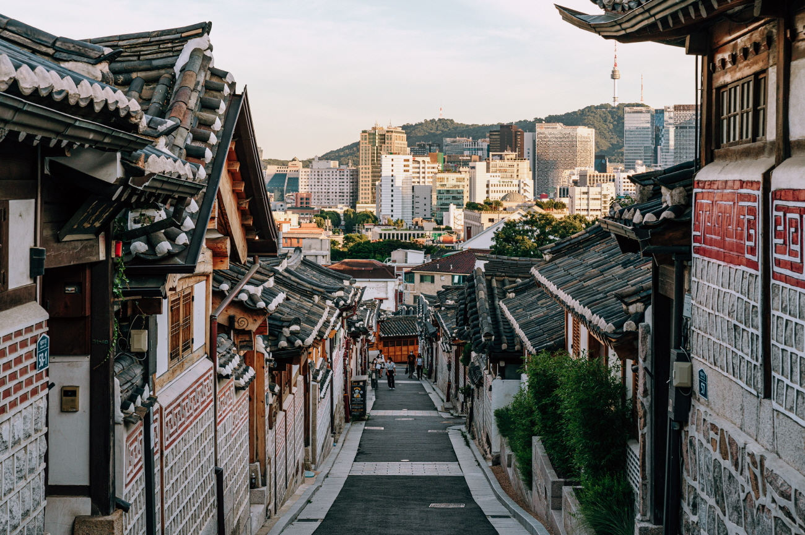

Surrounded by Gyeongbokgung Palace, Changdeokgung Palace and Jongmyo Shrine, Bukchon Hanok Village is home to hundreds of traditional houses, called hanok, that date back to the Joseon dynasty.
Today, many of these hanoks operate as cultural centers, guesthouses, restaurants and tea houses, providing visitors with an opportunity to experience, learn and immerse themselves in traditional Korean culture.
